REEL 01
CINEMATIC ARCHIVE · STUDIO EDITION
THE BLADE THAT
SEVERS DESPAIR
Between the high blooming valleys of wisteria and the boundless demon-haunted twilight, warriors draw their nichirin blades. An elegant chronicle honoring the Hashira, the Twelve Kizuki, and the wills that burn hotter than the dawn.
“No matter how devastating the blows may be, you have no choice but to go on living. Set your heart ablaze and pierce through the darkest night.”
MOTION CHRONICLES · 映像記録
CINEMATIC REELS
High-definition motion showcases capturing the fluid intensity, breathing forms, and lethal elegance of the demon universe.
REEL 02
CHARACTER PROFILES · 登場人物
LEGENDS & WARRIORS
Collector gallery showcasing the Hashira, the Demon Slayer Corps, and the Twelve Kizuki with their official art posters, combat styles, and iconic philosophies.
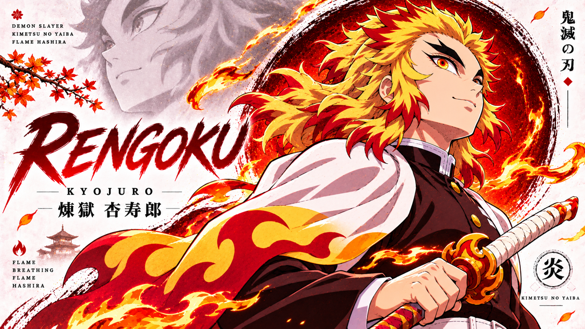
炎柱 · FLAME HASHIRA
煉獄 杏寿郎
Flame Breathing (炎の呼吸)
Kyojuro Rengoku
Flame Pillar of the Demon Slayer Corps
A charismatic warrior of unyielding honor whose passion burned brighter than the dawn. Guided by his mother's principle that the gifted are blessed with strength to shelter the weak, he gave his life on the Mugen Train so no passenger would perish.
“Set your heart ablaze. Go beyond your limits! I will fulfill my duty! I will not allow anyone here to die!”
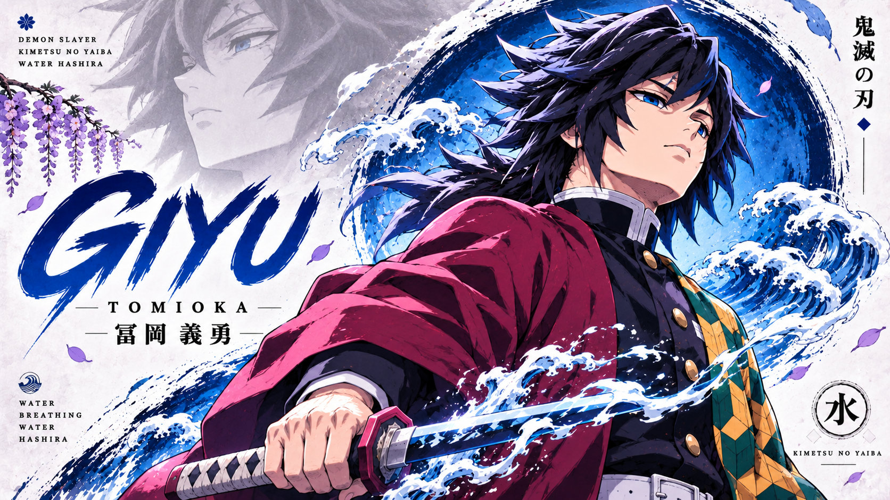
水柱 · WATER HASHIRA
冨岡 義勇
Water Breathing: 11th Form Dead Calm
Giyu Tomioka
Water Pillar of the Demon Slayer Corps
The stoic Water Hashira who first spared Tanjiro and Nezuko. Carrying survivor's guilt from the Final Selection, he refined Water Breathing into the transcendent Eleventh Form "Dead Calm" (凪), which neutralizes any incoming attack.
“Feel the rage. That unforgiving anger will become your unyielding drive to take action and strike back!”
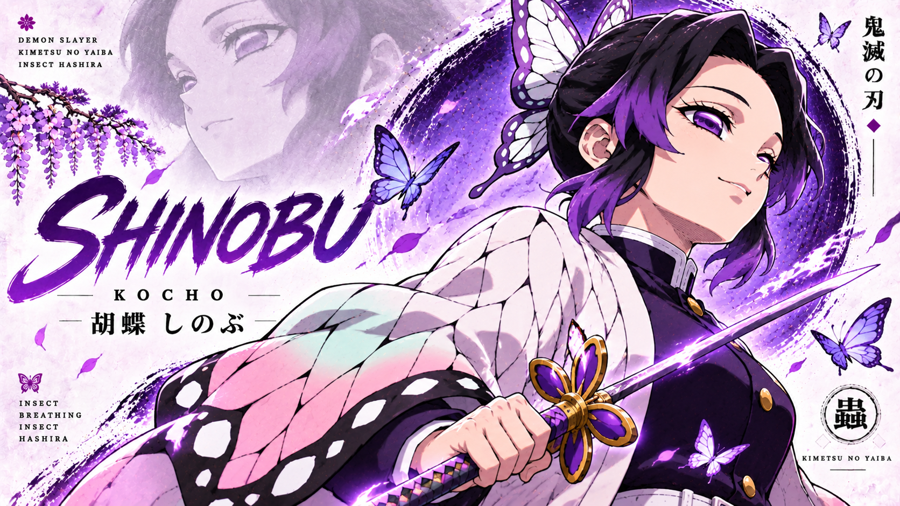
蟲柱 · INSECT HASHIRA
胡蝶 しのぶ
Insect Breathing (蟲の呼吸)
Shinobu Kocho
Insect Pillar · Mistress of Butterfly Mansion
A genius apothecary who compensates for lacking the physical strength to decapitate demons with blistering thrusting velocity and lethal custom wisteria venom injected via her unique needle-like Nichirin stinger.
“Even without the physical strength to decapitate demons, the wisteria poison in my stinger blade is absolute.”
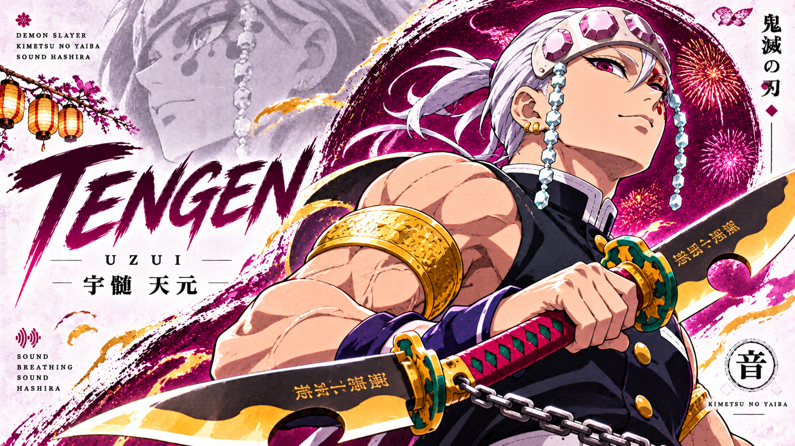
音柱 · SOUND HASHIRA
宇髄 天元
Sound Breathing (音の呼吸)
Tengen Uzui
Sound Pillar · Shinobi Master of Flamboyance
A former shinobi turned Hashira who fights with dual explosive cleavers connected by a chain. His "Musical Score" technique analyzes enemy combat rhythms like a musical piece to predict and deconstruct every attack pattern.
“We're gonna tear this place up flamboyantly! Don't look away, because the god of festivals is in the house!”
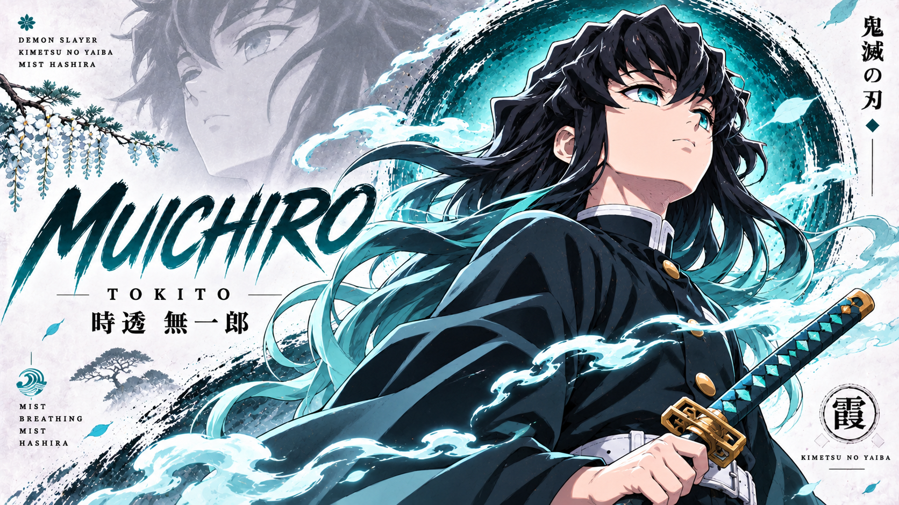
霞柱 · MIST HASHIRA
時透 無一郎
Mist Breathing (霞の呼吸)
Muichiro Tokito
Mist Pillar · Youngest Prodigy of Sengoku Blood
A 14-year-old child prodigy who became a Hashira just two months after picking up a sword. Direct descendant of the Tsugikuni bloodline, he developed the Seventh Form "Obscuring Clouds" (朧) which confounds enemies with disorienting tempo changes.
“Even if I lose my memories, my body remembers. The wrath inside me never disappears until every demon is wiped out.”
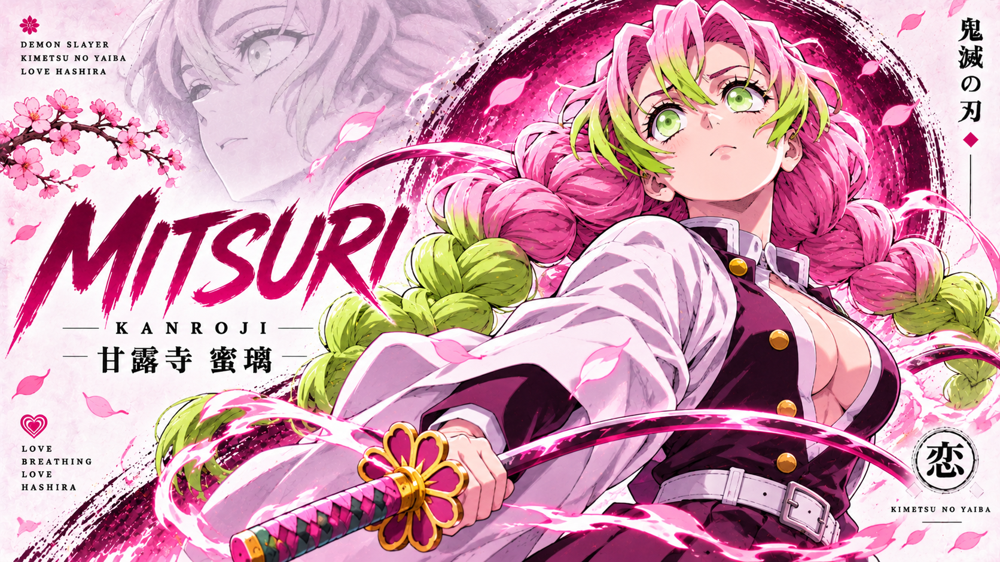
恋柱 · LOVE HASHIRA
甘露寺 蜜璃
Love Breathing (恋の呼吸)
Mitsuri Kanroji
Love Pillar of the Demon Slayer Corps
Born with muscle density eight times greater than an average human, Mitsuri wields a ribbon-like whip Nichirin blade with supersonic speed. Passionate, kind-hearted, and determined to protect those she cherishes.
“Is it okay for a girl to be this strong? I joined the Demon Slayer Corps to find someone who loves me for who I truly am!”
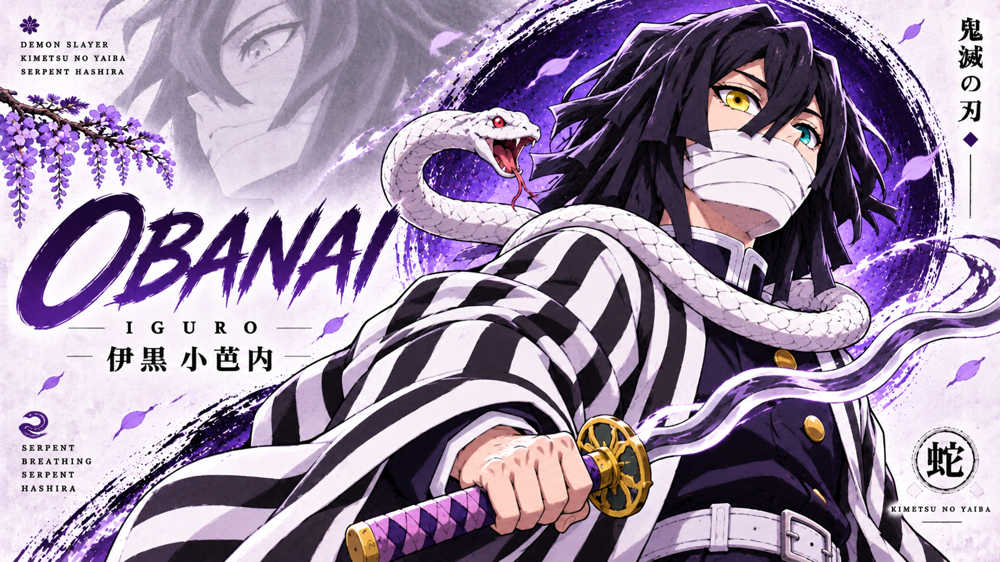
蛇柱 · SERPENT HASHIRA
伊黒 小芭内
Serpent Breathing (蛇の呼吸)
Obanai Iguro
Serpent Pillar of the Demon Slayer Corps
Accompanied by his white snake Kaburamaru, Obanai bends his twisted Kris-like blade in uncanny slithering arcs that bypass all standard defenses. Haunted by his family's dark past, he fights with fierce devotion to Mitsuri.
“I want to defeat Muzan and die. In the next life, when I have pure blood, I will find you and tell you that I love you.”
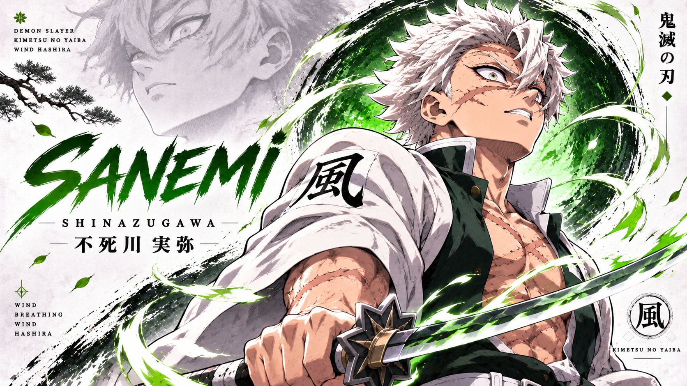
風柱 · WIND HASHIRA
不死川 実弥
Wind Breathing (風の呼吸)
Sanemi Shinazugawa
Wind Pillar · Master of Cyclone Slashes
Scarred from countless lethal skirmishes, Sanemi possesses rare Marechi blood that intoxicates and disorients demons. Behind his violent, abrasive exterior lies an agonizing desire to keep his younger brother Genya safe.
“Cut demons into ribbons until nothing remains! That's all that matters in this hell!”
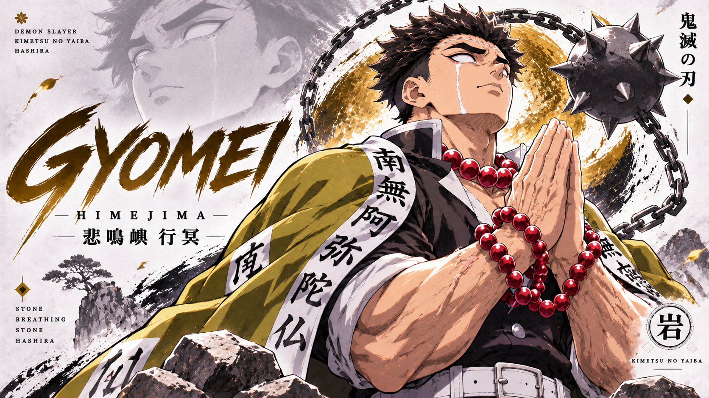
岩柱 · STONE HASHIRA
悲鳴嶼 行冥
Stone Breathing (岩の呼吸)
Gyomei Himejima
Stone Pillar · Leader & Strongest of the Hashira
Though blind since childhood, Gyomei attained the highest physical and spiritual power in the Corps. Wielding a massive spiked iron flail and broad axe on a chain, he strikes with earth-shattering concussive force.
“Namu Amida Butsu... How pitiable they are. But my prayer will grant peace to their wandering souls.”
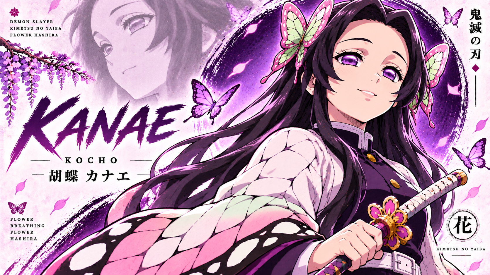
花柱 · FLOWER HASHIRA
胡蝶 カナエ
Flower Breathing (花の呼吸)
Kanae Kocho
Former Flower Pillar · Guardian of Butterfly Mansion
The gentle, compassionate older sister of Shinobu and adoptive sister of Kanao. Kanae held onto a dream of peaceful coexistence between humans and demons, leaving behind a legacy of warmth, healing, and kindness.
“I dreamt of a world where humans and demons could live in peace... Please, Shinobu, keep smiling.”
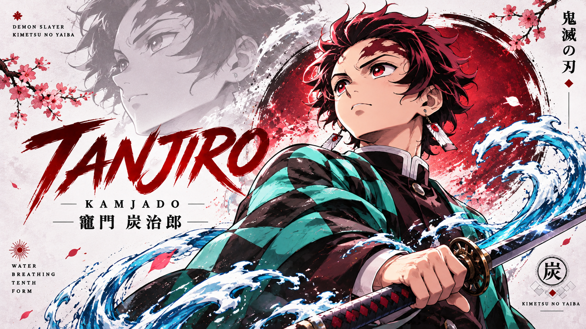
日の呼吸 · SUN & WATER
竈門 炭治郎
Hinokami Kagura & Water Breathing
Tanjiro Kamado
Heir to the Dance of the Fire God
A kind-hearted boy with an extraordinary sense of smell who embarked on a relentless journey to cure his sister Nezuko and end Muzan’s reign, carrying the ancestral Hanafuda earrings and the Sun Breathing heritage.
“No matter how many people you lose, you have no choice but to go on living. No matter how devastating the blows may be.”
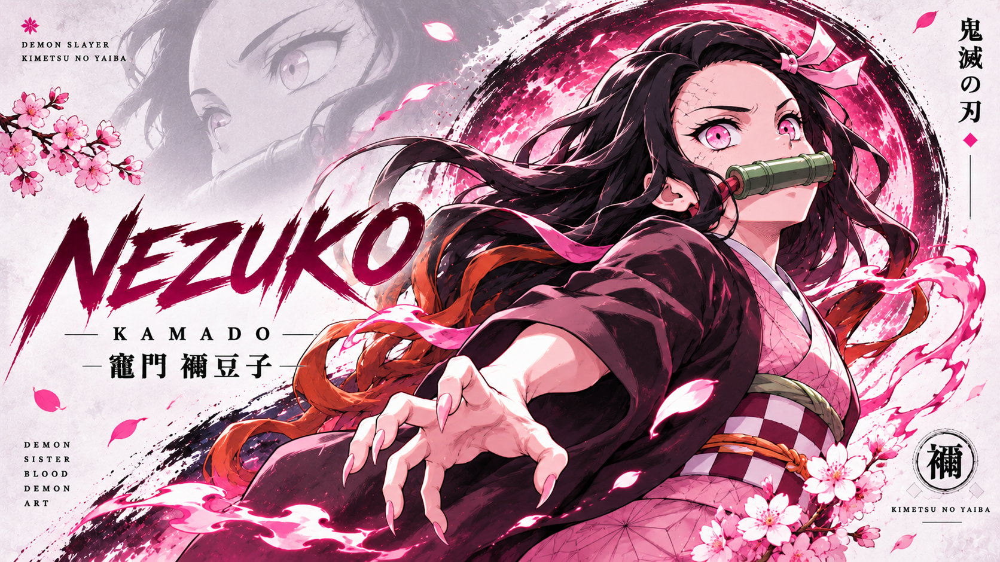
太陽の鬼 · SUNLIT DEMON
竈門 禰豆子
Blood Demon Art: Exploding Blood
Nezuko Kamado
Sun-Conquering Demon Maiden · Human Protector
Turned into a demon by Muzan, she refused to harm humans and draws vitality from deep sleep. Her unique pink pyrokinesis burns demon flesh while leaving humans unscathed, eventually conquering the sun itself.
“Humans are meant to be protected and saved... I will never hurt them!”
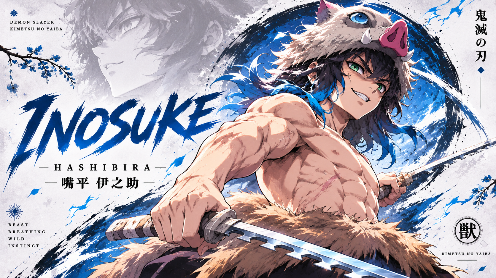
獣の呼吸 · BEAST BREATHING
嘴平 伊之助
Self-Created Beast Breathing
Inosuke Hashibira
Wild Mountain Slayer · Dual Serrated Nichirin
Raised by wild boars in the high mountains, Inosuke developed an acute spatial perception that feels changes in air currents. Wielding chipped twin swords, his unpredictable beast fangs shred demon defenses.
“Better stop cryin' and start fightin'! When you get sad, get mad instead and tear 'em up!”
上弦の壱 · UPPER RANK ONE
黒死牟 ✕ 継国 縁壱
Moon Breathing (月の呼吸)
Kokushibo & Yoriichi
Upper Rank One & The Sun Progenitor
Twin prodigies forged in the Sengoku Era. Yoriichi walked as the gentle avatar of Sun Breathing; Kokushibo, consumed by jealous rivalry, forged Moon Breathing with a demonic flesh blade to chase his brother through eternity.
“The path of the warrior is fraught with sacrifices. In my eternal pursuit to surpass him, I discarded everything—my humanity, my kin, my very soul.”
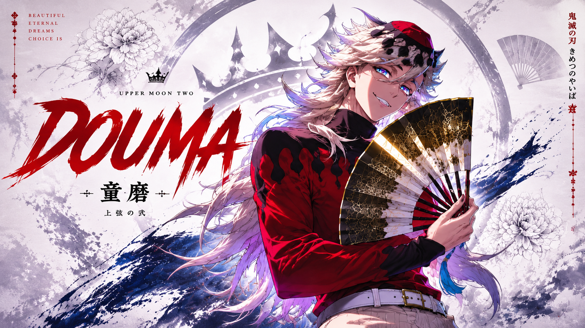
上弦の弐 · UPPER RANK TWO
童磨 · 極楽教
Cryokinesis (粉凍り・散り蓮華)
Douma
Leader of the Eternal Paradise Cult · Twelve Kizuki
Serene, cheerful, and completely devoid of human grief or fear. He views devouring mortals as a divine act of mercy, sparing them from the pain of mortal life through his freezing lotus Blood Demon Art.
“Humans are so tragic. You cry, you suffer, you struggle against death. But fear not—inside my body, there is no pain, no hunger, only eternal bliss.”
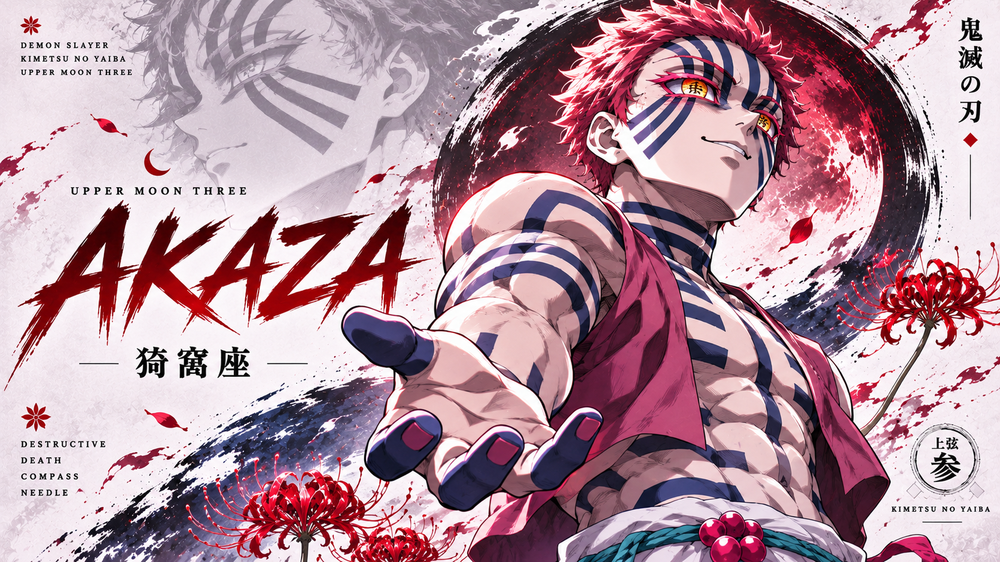
上弦の参 · UPPER RANK THREE
猗窩座
Destructive Death (破壊殺・羅針)
Akaza
Martial Arts Specialist · Twelve Kizuki
Formerly the human martial artist Hakuji. Obsessed with reaching absolute combat perfection, he fights with shockwave-infused martial strikes while strictly refusing to consume or harm women.
“Become a demon, Kyojuro! If you don't, you will age and wither. Refine your martial arts for centuries to come!”
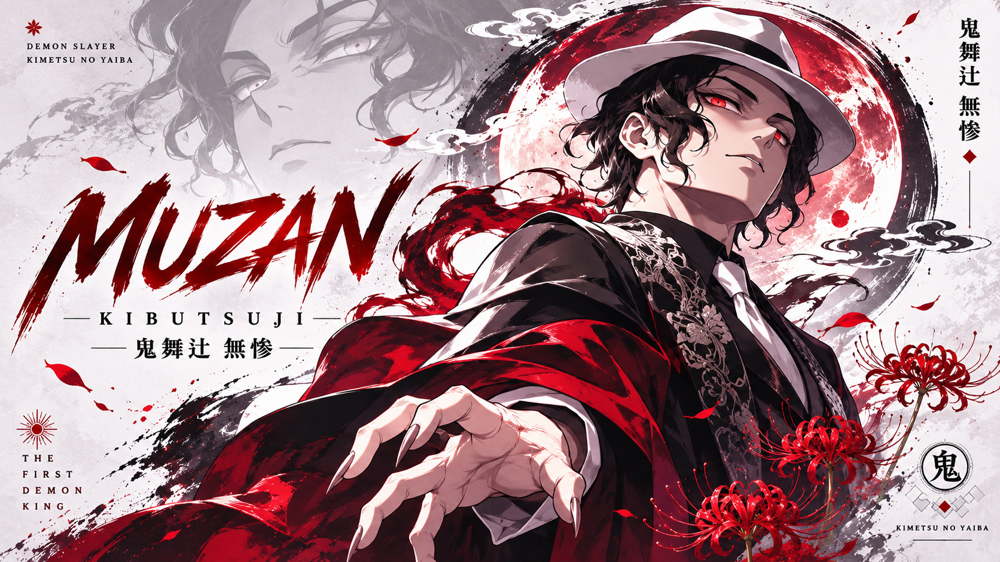
万鬼の始祖 · DEMON KING
鬼舞辻 無惨
Biokinesis & Blood Curse
Muzan Kibutsuji
The Demon King · Progenitor of All Demons
A thousand-year-old progenitor whose singular ambition is absolute physical perfection and conquering the sun. Cold and tyrannical, he rules the Twelve Kizuki through absolute telepathic dominance.
“I am a living catastrophe. Does a natural disaster apologize to the trees it uproots? Survival alone should suffice.”
MEMORABLE INSCRIBED WORDS · 魂の言霊
WORDS THAT BURNED THROUGH TWILIGHT
“
Set your heart ablaze. Go beyond your limits! I will fulfill my duty! I will not allow anyone here to die!
Kyojuro Rengoku
The Flame Hashira · 炎柱
“
You cannot even touch the sky with your hand, yet you wish to seize the stars? Even if our lives are fragile and fleeting, the fire of human will shall never be extinguished.
Yoriichi Tsugikuni
Sun Breathing Progenitor · 日の呼吸開祖
“
Humans are so tragic. You cry, you suffer, you struggle against death. But fear not—inside my body, there is no pain, no hunger, only eternal bliss.
Douma
Upper Rank Two · 十二鬼月